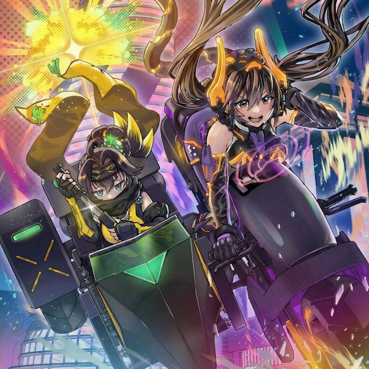
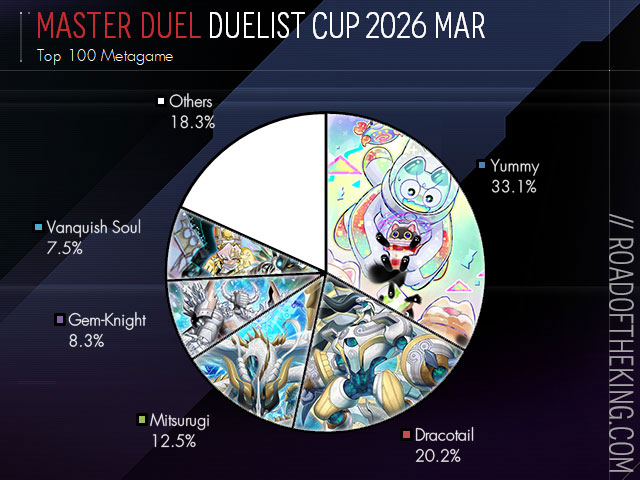
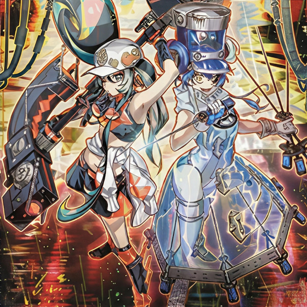
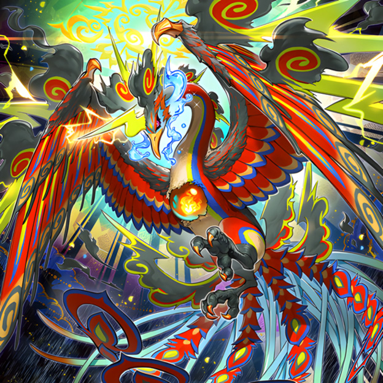

HOT

▲ 마스터 듀얼에 선행 출시한 '우:피 팬시볼'의 일러스트
'유희왕 마스터 듀얼'의 4주년에 벌어진 일은?
2022년 1월 19일 정식 출시한 '유희왕 마스터 듀얼'은 2026년 2월 5일 부로 출시 4주년 기념 캠페인을 진행하였다. 약 2달 가량의 기간 사이에 접속한 플레이어는 로얄 가공 사양 UR(울트라 레어) 카드 3장을 포함한 다양한 보상을 획득할 수 있었다. 주요 업데이트 내역을 살펴보면 다음과 같다.
● 솔로 모드(싱글플레이 전용)에 '어둠을 다루는 운반책' 스토리가 추가되었다. 데이터를 훔치는 운반책 '아이:피 마스카레나'(표지 사진의 우측)와 그녀를 체포하려는 S-Force 소속 '에스:피 리틀나이트'(표지 사진의 좌측)가 쫒고 쫒기는 이야기를 다루며, 캐릭터 더빙이 포함된 애니매이션이 같이 수록되었다. 특히 유희왕 프랜차이즈 최초로 마스터 듀얼에 선행 출시된 링크 몬스터 '우:피 팬시볼'은 강력한 성능과 더불어 화제를 일으켰다.
● 상점에서 판매되던 스트럭처 덱 '볼텍스 오브 매직'이 '다크매직 블래스트'라는 이름으로 새롭게 일신되었다. 미디어 믹스 시리즈 초대 작품 주인공인 어둠의 유우기의 에이스 몬스터 '블랙 매지션'을 서포트하는 구성의 스트럭처 덱으로, 한 팩에 3장씩 수록된 '매지션즈 소울즈' 등의 고성능 카드와 더불어 소환하면 블랙 매지션 관련 카드를 덱에서 패에 넣는 신규 융합 몬스터 '멸망의 흑마술사' 등이 포함된 꽉 찬 구성으로 이루어졌다.
● 신규 셀렉션 팩 '스트라이크 오브 저스티스'가 상점에서 판매되었다. 주요 신규 카드는 유희왕 5D's의 주인공 후도 유세이의 에이스 몬스터 '정크 워리어'의 서포트 카드 위주로, 주로 '정크 시그널' 등의 고성능 카드가 주목받았다. 이외에는 자신의 몬스터를 파괴해가며 싸우는 링크 몬스터 위주의 '바렛' 덱과 '키스킬' 몬스터와 '리일라' 몬스터의 링크 소환을 거듭해 강력한 링크 몬스터들을 불러내는 'Evil★Twin'(이빌트윈) 덱, 그리고 엑시즈 소환 위주의 신규 덱 'K9'(케이나인) 덱과 격투 게임 컨셉의 'VS'(뱅키시 소울) 덱의 신규 카드가 추가되었다.
● 신규 유저 및 복귀 유저를 대상으로 한 팔로우 캠페인 이벤트를 통해 '기간틱 스파클' 스트럭처 덱의 배포를 진행하는 중이다. 한때 강력함이 입증된 '스프라이트' 구축의 덱으로, 레벨 2/랭크 2/링크 2 몬스터를 대량 전개하는 숫자 2와 관련된 덱 컨셉이 특징이다. 초대 코드를 1명만 교환해도 '기간틱 스프라이트'와 '스프라이트 엘프'를 비롯한 덱에 빠져서는 안 될 몬스터를 필두로, 미션을 추가로 달성하면 '스프라이트 스프린드'와 같은 고성능 카드를 무료로 획득할 수 있다.
● 그 외에 '아이:피 마스카레나', '에스:피 리틀나이트', '무덤의 지명자', 'Evil★Twin' 덱 카드 등의 신규 일러스트와 'K9' 필드 등의 신규 듀얼 필드, 그 외의 주년 한정 상품의 복각이 이루어졌다.
Info

▲ 2026년 3월 '듀얼리스트 컵'의 덱 점유율 통계
2026년에 홣약하는 덱에는 무엇이 있을까?
마스터 듀얼의 '듀얼리스트 컵'은 실력 있는 듀얼리스트들이 최대한 높은 점수를 목표로 서로 경쟁하는 PvP 컨텐츠이다. 유희왕에는 덱 성능이 타 덱보다도 우월한 덱들이 다수 존재하며, 이 기사에서는 2026년에 활약한 덱, 특히 2026년 3월 듀얼리스트 컵에서 활약한 덱을 채용률 통계 순서대로 소개한다.
● '야미' 덱은 링크 1 몬스터를 소재로 한 싱크로 소환을 기반으로 한 덱으로, 상대 턴에도 필드에서 싱크로 소환을 실행하는 링크 1 몬스터 '야미★스내치'와 상대의 효과에 반응하여 묘지에서 야미 몬스터 2마리를 소환하는 야미 싱크로 몬스터들을 통해 지속적으로 상대를 방해하는 과정을 인형 뽑기 컨셉으로 해석한 덱이다. 실전에서는 '도레미코드'의 카드를 혼합한 구축이 가장 메이저했으며, 이는 덱에서 도레미코드 몬스터를 패에 넣은 후 바로 소환하는 효과를 가진 '도레미코드 하피니스'와 패에 다른 천사족 도레미코드 몬스터가 있다면 상대 턴에도 패에서 천사족 몬스터 1장을 버리고 상대의 몬스터 1장의 효과를 무효로 하고 파괴할 수 있는 '버밀리온 디클레어러'의 존재가 주된 이유였다.
● '드래곤테일' 덱은 패의 몬스터라면 뭐든지 융합 몬스터의 소재로 할 수 있는 융합 소환 덱으로, 필드에 소환하면 서로의 필드/묘지의 아무 몬스터나 패로 되돌릴 수 있어서 자신의 몬스터 회수와 상대 견제를 동시에 할 수 있는 에이스 몬스터 '드래곤테일 알자리온'과 융합 소재로 쓰이면 덱에서 드래곤테일 마법/함정을 세트하는 드래곤테일 하급 몬스터들을 통해 장기전을 바라보는 덱이다. 특히 '드래곤테일 파이메나'는 상대 턴에도 패에서 버리면 기습적으로 융합 소환을 실행할 수 있는 효과를 지녔다. 실전에서는 주로 '낙인' 덱의 카드들과 조합됐으며, 융합 소재를 덱에서 조달할 수 있는 마법 카드 '낙인융합'과 강력한 융합 몬스터 '빙검룡 미라제이드'를 필두로 내세운 낙인 드래곤테일이 대세였다.
● '미츠루기' 덱은 의식 소환을 반복적으로 실행하여 필드의 몬스터와 미츠루기 마법/함정을 폭발적으로 불려나가는 의식 소환 덱으로, 모든 몬스터가 공통적으로 의식 소재로 쓰이는 등의 방법으로 릴리스되었을 때 이득을 보는 효과를 지녔기에 이를 바탕으로 한 막대한 자원 창출이 이점이다. 특수 소환 시 상대 필드의 몬스터를 전부 파괴하고 상대가 패를 버리지 않으면 상대의 효과 하나를 무효화할 수 있는 강력한 효과를 지닌 에이스 몬스터 '아메노무라쿠모노미츠루기'와 일반 소환을 하지 않고도 미츠루기 카드 활용을 가능하게 해주는 '아메노하바키리노미츠루기'의 강력함에 힘입어 타 덱에서도 혼합 구축으로 채용하는 경우가 더러 있었다. 하급 몬스터는 전부 레벨 4, 의식 몬스터는 전부 레벨 8이기에 미츠루기를 용병으로 채용한 다른 덱에서 이들을 소재로 '라이제올 듀오드라이브' 등의 엑시즈 몬스터를 소환하는 것도 가능하다.
● '젬나이트' 덱은 융합 소환이 주가 되는 덱으로, 최근 기존에는 덱에 1장만 넣을 수 있었던 '브릴리언트 퓨전'이 덱에서 3장까지 넣을 수 있게 됨에 따라 빛을 보게 된 덱이다. 이 카드는 젬나이트 융합 몬스터의 소재 조건에 맞다면 어떤 몬스터든 덱에서 소재로 할 수 있기에, 덱에서 융합 소재가 되어 묘지로 보내진 몬스터로 효과로 쓸 수 있는 '티아라멘츠' 등의 덱에서도 채용하는 강력한 파워를 지닌 지속 마법 카드이다. 젬나이트 위주로 덱을 구성할 경우 필드의 아무 몬스터 2마리만 링크 소재로 하면 '사로스=난나'를 통해 강력한 필드 전개가 가능해지는 '데먼스미스' 카드들이 고정적으로 쓰인다.
● 'VS'(뱅키시 소울) 덱은 주로 같은 시기에 출시된 'K9' 덱의 카드들과 조합되며, 해당 혼합 구축은 'K9VS'라고 불린다. 뱅키시 소울 덱은 패의 몬스터를 적극적으로 활용하는 덱으로, 효과 발동을 위해 특정 속성의 몬스터를 패에서 보여주는 등의 행위를 격투 게임의 커맨드 입력으로 해석하였다. 최근 4주년에 추가된 막강한 파워 카드 'VS 홀리 수'의 존재가 이 덱을 1티어급 덱으로 강화시킨 원동력으로, 상대 턴에도 패의 다른 뱅키시 소울 카드 하나만 보여주면 필드에 특수 소환되어서 자신의 턴이 오기도 전에 다른 뱅키시 소울 몬스터들을 특수 소환하거나 상대 필드 몬스터를 빼앗는 것이 가능하다. 상대 턴 견제가 가능한 이 카드를 보조해주는 것이 바로 K9의 카드들로, 상대가 패 혹은 묘지의 몬스터 효과를 발동한 턴이라면 상대 턴에도 소환되어서 덱에서 K9 카드 1장을 묘지로 보낼 수 있는 'K9-17호 이즈나'와 이즈나의 효과로 묘지로 보내지면 소생되어서 상대 턴에 바로 엑시즈 소환을 실행하게 해주는 'K9-ØØ호 루푸스'의 존재로 '0턴 견제'라는 덱의 방향성이 확실하게 정립되는 계기가 되었다.
NEW

▲ 킬러튠의 에이스 몬스터, '킬러튠 B2B'
튜너에 튜너를 튜닝! 내 턴이든 상대 턴이든 싱크로 소환하는 '킬러튠'
'킬러튠' 카드들은 2026년 4월 9일에 추가된 신규 셀렉션 팩, '더 프렌지 튜닝'에서 출시되었다. 본 기사에서는 킬러튠 덱과 관련된 이모저모를 다룬다.
싱크로 소환에는 보통 튜너 1장과 튜너가 아닌 몬스터 1장이 필요하다. 킬러튠은 이 규칙을 완전히 깨부순 덱으로, 덱에 들어가는 테마 내의 모든 몬스터가 튜너이며, 튜너만으로 싱크로 소환이 가능하다. 또한, 메인 덱의 모든 하급 몬스터들과 싱크로 몬스터인 '킬러튠 트랙메이커'는 싱크로 소재로 쓸 경우 패의 튜너 1장도 추가로 소재로 쓸 수 있기에, 킬러튠은 굳이 몬스터를 여러 마리 소환하지 않아도 바로 원하는 싱크로 몬스터를 소환하는 것이 가능하다. 때문에 상대 턴에도 패에서 발동하면 상대가 몬스터를 특수 소환한 만큼 발동한 플레이어가 1장씩 드로우하는 '증식의 G'나 '마루챠미 후와로스'와 같은 카드로부터 비교적으로 손해가 덜하다.
킬러튠의 다른 특징으로는 하급 몬스터들이 공통적으로 싱크로 소재가 되어 묘지로 보내졌을 경우 상대를 방해하는 효과를 가지고 있다는 것이다. 그 가짓수 또한 다양하여, '킬러튠 믹스'와 '킬러튠 레코'를 통한 몬스터 및 마법, 함정 파괴는 물론 '킬러튠 로터리'의 상대 패 전부 확인, '킬러튠 큐'의 상대 덱 맨 위 조작, '킬러튠 클립'의 상대 엑스트라 덱 몬스터 무작위 1장 제외와 같은 다양한 견제가 가능하다. 이와는 별개로 에이스 몬스터로도 필드의 앞면 표시 카드를 무효로 하는 킬러튠 레드씰과 상대의 몬스터 효과에 반응하여 묘지/제외 상태의 아무 튜너나 특수 소환하거나 패로 회수하는 '킬러튠 B2B'와 같은 출중한 몬스터가 다수 존재한다.
게다가 속공 마법 카드인 '킬러튠 싱크로'는 마법/함정 존에 세트해두면 상대 턴에도 싱크로 소환을 실행할 수 있고, 킬러튠 클립 또한 상대 턴에 패에서 특수 소환된 후 싱크로 소환이 가능하기 때문에 자신 턴에 강력한 몬스터들을 늘여놓는 것이 아닌, 상대 턴에 싱크로 소환을 반복하며 상대를 최대한 방해하는 것이 킬러튠의 전술이라고 할 수 있다. 때문에, 가짓수가 많은 방해 효과들을 적재적소에 쓰는 플레이어의 재량이 요구되며, 킬러튠 로터리와 킬러튠 큐의 패 확인/덱 조작 효과를 통해 자신이 무조건 이기게 될 게임을 설계해나가는 플레이스타일을 가지고 있다고 볼 수 있다.
셀렉션 팩 '더 프렌지 튜닝'에는 킬러튠 외에도 링크 몬스터에 파츠를 장착시켜가며 싸우는 'R.B', 소환되면 필드의 카드를 전부 파괴하는 싱크로 몬스터 '블랙 로즈 드래곤'의 서포트 카드도 수록되었다.
NEW

▲ 현람의 에이스 몬스터, '현람호화 포닉스'
동네 문방구 룰이 현실로! '싸이크론'을 재해석한 '현람'
'싸이크론'은 속공 마법 카드로, 필드의 마법/함정 카드 1장을 지정해서 파괴하는 효과를 가지고 있다. 그러나, 발동 후 필드에 계속 남아있는 지속 마법/지속 함정 카드가 아닌 마법/함정 카드에 체인하여 해당 카드를 파괴하더라도, 그 카드의 효과는 막을 수 없다. '현람'은 싸이크론을 써서 파괴해도 효과는 막을 수 없던 어린 시절의 듀얼리스트들의 염원을 이뤄주는 덱으로, 이 기사에서는 현람 덱에 대한 설명을 다루고 있다.
속공 마법 카드는 일반 마법 카드와는 달리 패에서 기습적으로 쓸 수 있는 마법 카드로, 세트했다면 그 턴에는 발동하지 못하는 대신 상대 턴에 원하는 타이밍에 발동할 수 있다. 현람은 속공 마법인 싸이크론을 서포트하는 덱답게 모든 마법이 속공 마법이며, 덱에 속한 속공 마법이 아닌 범용적으로 쓰이는 속공 마법을 통해서도 어드밴티지를 취할 수 있다. 지속 함정 카드인 '현람한 권능'은 첫 번째 효과를 통해 1턴에 1번, '현람' 카드를 포함하는 묘지의 아무 속공 마법 카드 3장을 덱으로 되돌린 후 1장 드로우할 수 있다. 이 효과를 통해 쓰고 나서 묘지에 잠들어있는 '무덤의 지명자'나 '금지된 일적'과 같은 강력한 속공 마법을 덱으로 되돌려서 다시 패에 잡을 여지를 만들 수 있다는 것이다.
현대의 유희왕에 와서 싸이크론의 효과는 그다지 파격적이라고 볼 수 없지만, 현람에서는 이 싸이크론의 모든 것을 십분 활용한다. 우선 덱의 레벨 3 몬스터들은 공통적으로 묘지에 싸이크론이 존재할 경우, 혹은 상대 필드에 마법/함정이 없을 경우 패에서 특수 소환할 수 있다. 즉, 싸이크론을 지속적으로 회수 및 발동하여 상대 필드의 마법/함정 존을 비우는 것으로 트리거를 맞출 수 있게 된다. 또한, 현람의 모든 속공 마법들은 싸이크론의 효과로 파괴되었을 경우 자신의 마법/함정 존에 세트되는 효과를 가지고 있다. 이는 다른 현람 속공 마법을 먼저 발동한 후, 그 카드에 싸이크론으로 체인을 걸어 아직 발동 중인 속공 마법을 파괴하면 다음 턴부터 원하는 때에 발동할 수 있게 되는 것이다. 마지막으로 현람한 권능의 두 번째 효과를 통해 싸이크론이 발동했을 때 필드의 앞면 표시 카드 1장도 무효로 할 수 있기에, 현람에게 있어서 싸이크론은 매우 중요한 카드이다.
레벨 6, 레벨 9의 현람 몬스터들 또한 속공 마법의 사용을 적극적으로 장려한다. 이들은 공통적으로 속공 마법 카드가 발동했을 경우 패에서 특수 소환된다. 이는 상대가 발동한 속공 마법 또한 해당되어, 동시에 상대의 속공 마법에 대한 견제력으로 작용한다. 특히, 에이스 몬스터인 '현람호화 포닉스'는 속공 마법이 발동했을 경우 상대 필드의 카드를 2장까지 덱으로 되돌리는 강력한 제거 효과를 지니고 있다. 이처럼 현람은 유희왕 내에서도 손꼽히게 속공 마법 응용도가 높은 덱이지만, 그만큼 싸이크론이 '신의 밀고'등의 카드에 의해 전부 제외당하면 매우 치명적이므로 이를 경계해야 할 필요가 있다. 결론적으로, 현람은 덱 최초 공개 기준 25년 전 카드를 현대 유희왕 메타에 안착시킨 성공적인 리메이크 사례로 꼽히며, 출시가 얼마 안 되었음에도 듀얼리스트들 사이에서 상당한 인기를 얻는 중이다.
현람은 셀렉션 팩 '더 드라스틱 스톰'에서 최초로 추가되었으며, 해당 팩은 2026년 5월 7일에 판매 기간이 종료될 예정이다. 해당 팩에는 이외에도 에이스 몬스터 '둠즈XII-드라스트리우스'를 필두로 장착 마법과 파괴 기믹을 다루는 엑시즈 소환 덱 '둠즈', 묘지 몬스터를 2마리씩 소생하는 마법 카드 '강귀재전' 등의 다양한 효과를 이용해 높은 수치의 링크 몬스터를 여러 마리 소환하는 '강귀', 그리고 일반 함정 카드 '버스터 모드'의 서포트 카드 등이 수록되었다.